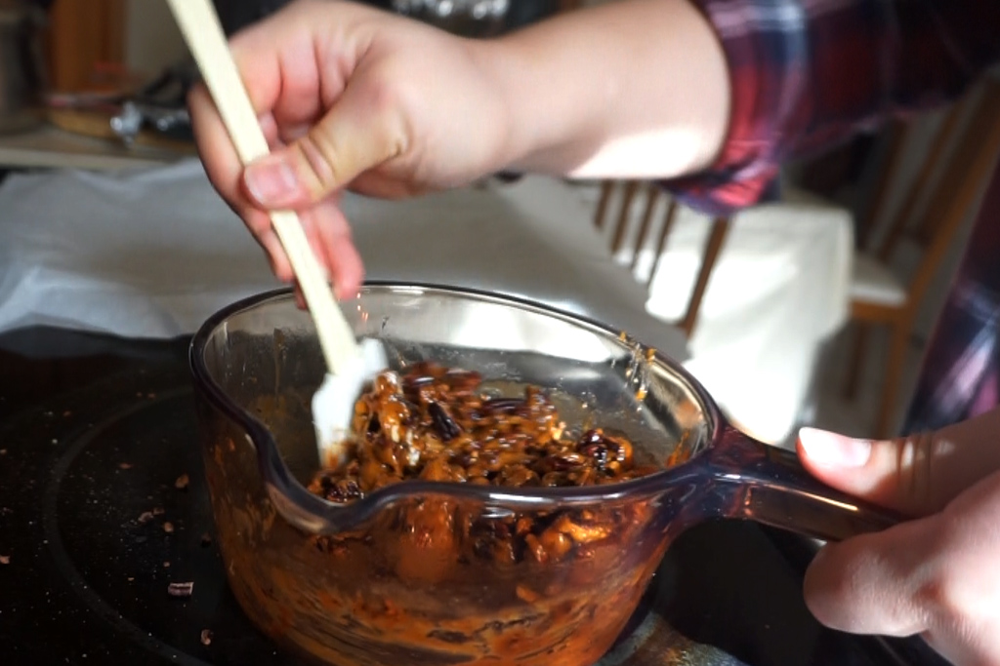
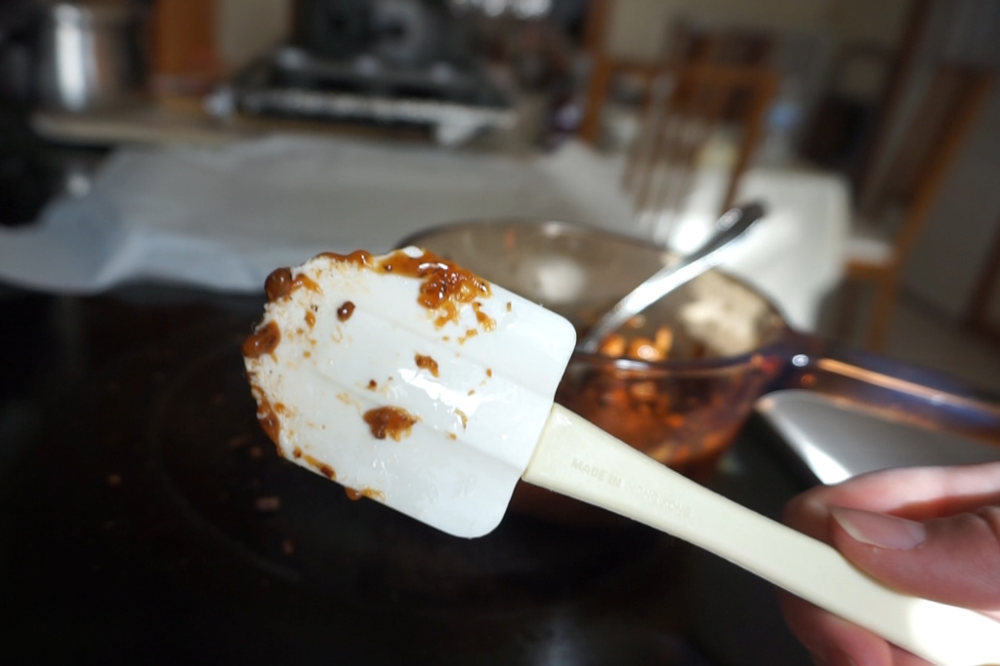
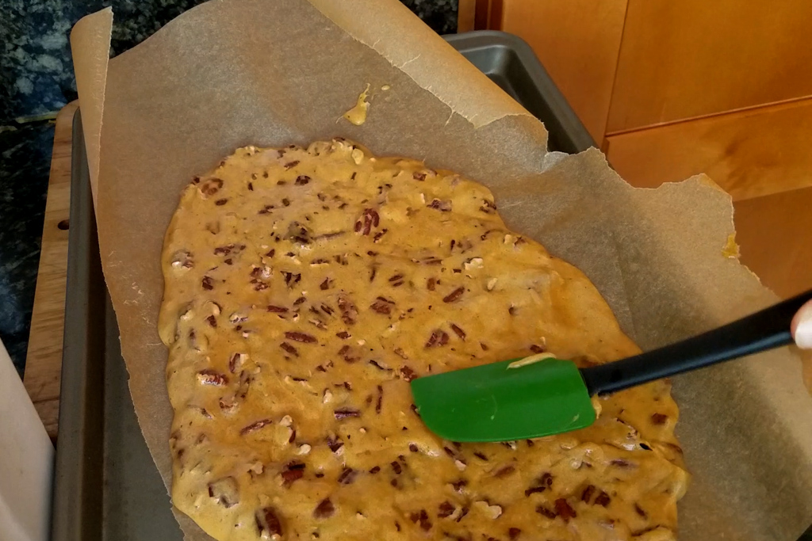
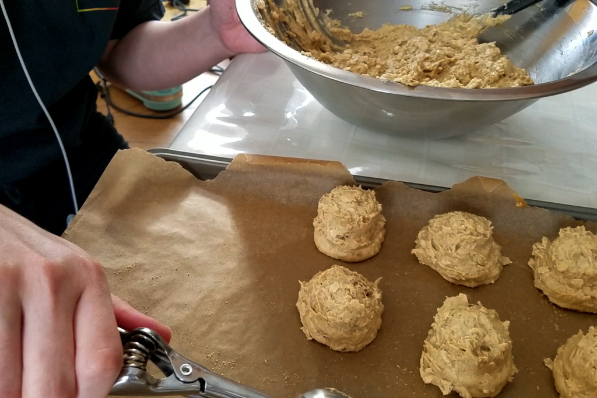
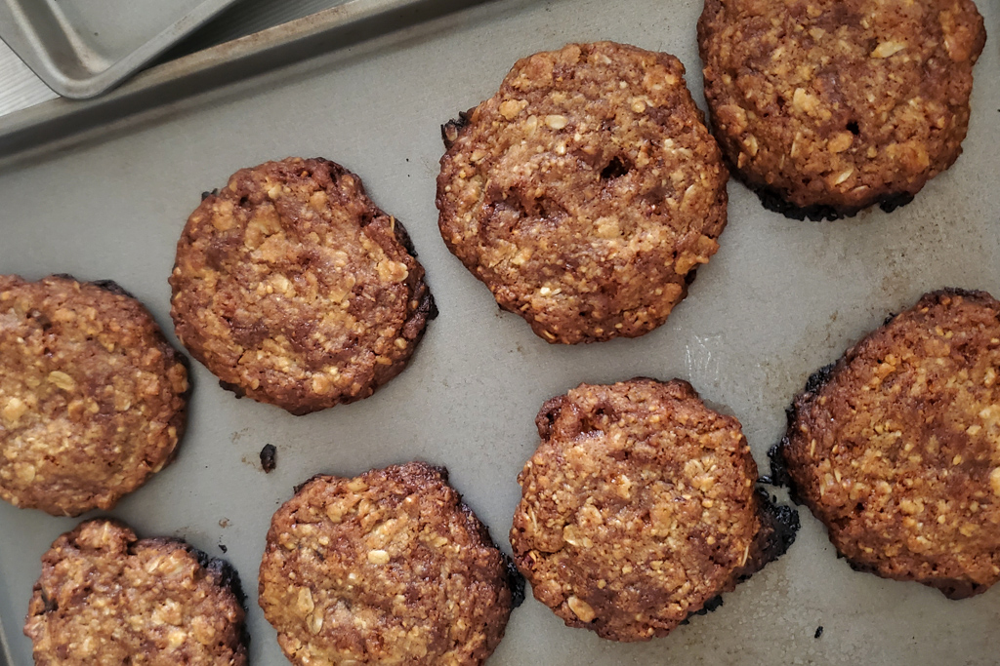
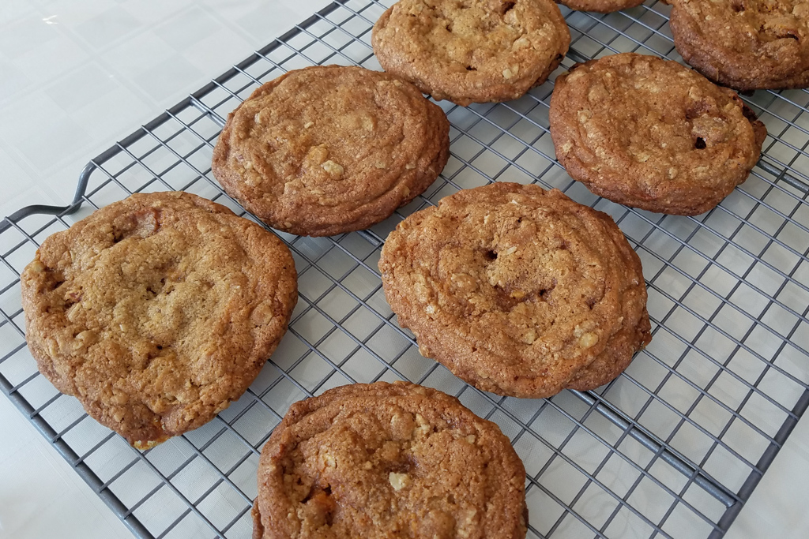
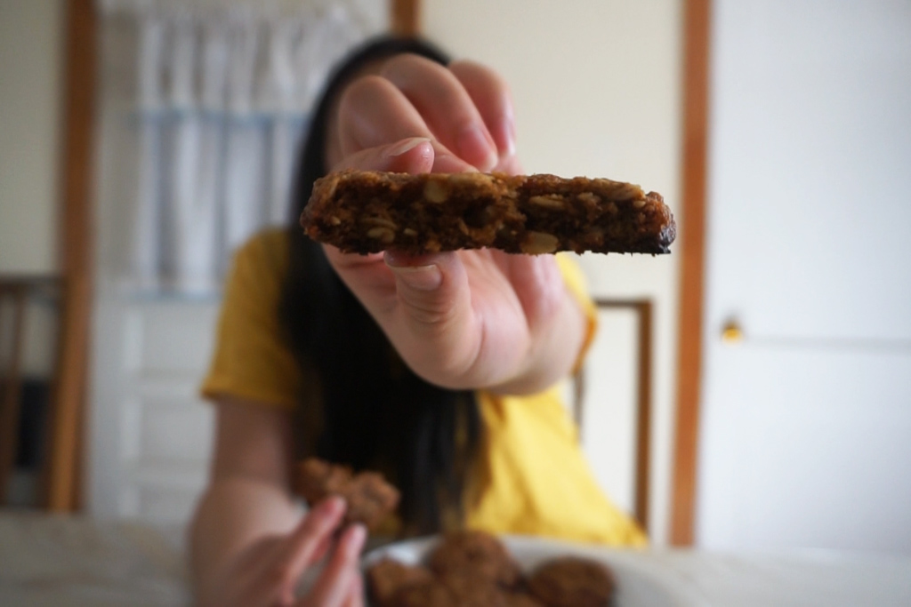

Back to Back Baking - Oat and Pecan Brittle Cookies
Feb 25 - Written by Bonnie and Emily
Our love for baking and cookies brings us back to another Back to Back Baking where Bonnie takes on the challenge of baking Oat and Pecan Cookies only with Emily’s verbal guidance!
As usual, this recipe comes from one of our favorites, Claire Saffitz’s Cookbook, Dessert Person. After seeing the photo of these cookies and hearing about how amazing they are, we had to give them a try. Now these cookies are quite time consuming to make; however, every bit of it is worth it for the final product. From the homemade pecan brittle to the brown butter, this cookie has many elements that add depths of flavor to this cookie when brought together.
Neither one of us has ever made pecan brittle before or any brittle for that matter so it was a learning experience for the both of us. With the addition of trying to deal with technical difficulties and the brittle at the same time, Emily messed up her first batch of pecan brittle, leaving her with pecans coated in a crumbly caramel coating. Though it’s no longer brittle, these not so appetizing looking pecans were still quite tasty.
Bonnie on the other hand had a whole other ordeal. Everything was going quite well for her until she realized she was missing something quite important. Her brittle looked the way it should and nothing was wrong there except for the fact that there was an additional white looking ingredient in the mix. This day was the day Bonnie learned the difference between silicone and rubber spatulas. It was only when half her spatula melted in the pot when Bonnie realized that her spatula was actually made of rubber; therefore, it was not heat resistant, so her pecan brittle became sprinkled with rubber.
As we both had messed up our first batch of pecan brittle in drastically different ways, we decided to scrap everything and start all over.
After a new (silicone) spatula was acquired, we were ready to attempt making the pecan brittle again. This time, things went a lot smoother as we both had a solid idea of how it was supposed to go. So, after several minutes of waiting for the butter and sugar mixture to turn a dark amber color, we added in our pecans and poured it all out onto a baking sheet and voila! Successful pecan brittle! The process was quite satisfying and stressful at the same time since there's a lot of patient waiting and quick mixing once the mixture reached the desired color.
Now that the pecan brittle was completed, we could move onto actually making the cookies.
Unlike your usual cookie recipe, unless you’re Emily, this recipe calls for brown butter. Bonnie, a novice baker, has never made brown butter before but was assured that it was simpler than she thought. In all honesty, brown butter is simply melting butter in a pot and consistently stirring or swirling it until the milk solids in the butter turn brown. Its a simple process that adds a whole lot of flavor to whatever it is you are making.
With the brown butter completed, the remainder of the steps were quite standard. From combining all of the dry ingredients to mixing together all the wet ingredients, there wasn’t anything really special or new here except for the addition of blitzed up oats and pecan brittle in the dry ingredients. As neither one of us had a full size food processor to create the dry mix, we did it in a mini food processor and a blender. If you have seen Claire make these cookies on her channel, she wonders if it could be done in a blender and the answer is yes, it can be! With the dough nearly completed, Emily ran into a small setback while trying to get a different camera angle. As she was just about to add the remaining ingredients, her camera fell right into her cookie dough!! Luckily the lens remained unscathed and only a small portion of it actually landed in the dough.
After everything is incorporated and you have your finished cookie dough, we reach the hardest part, having to chill the dough for at least 12 hours. We dreaded doing this as we just wanted to try the cookies after having spent the past 2 hours making the dough. The cookie mounds mocked us whenever we opened the fridge, but we managed to wait patiently for all the flavors in the dough to really develop.
Many many hours later, we finally get to bake! As we had made our cookies a bit smaller than Claire, we had to estimate a baking time as we knew it wouldn’t take as long as hers to bake. After baking them for 10 minutes and realizing they needed more time, we both accidentally overbaked them slightly. One thing we didn’t anticipate was the cookies not spreading out as much as we had expected, instead of a flat cookie, we ended up with variations of a thick cookie. Bonnie’s cookies were much thicker than Emily’s and neither one of us knows why that happened.
Bonnie’s Cookies
Emily’s Cookies
Nevertheless, the cookies were still a success. The brown butter added richness and depth of flavor to the cookies and the oats balanced out the sweetness of the pecan brittle. Something we both wish we didn’t do was break up the pecan brittle so much so that we could get more noticeable chunks of pecan in the cookies. These cookies were the perfect combination of a crispy edge and chewy center which in our opinion is how all cookies should be. Emily thinks these cookies are a tad too sweet but it would pair nicely with a cup of milk or tea to help with the sweetness. Bonnie thinks these cookies are a great sweet snack once in a while but they’re definitely on the chewier and stickier side.
If you’re looking for a new recipe to try, give this one a shot! Even if you do not make the whole recipe, you should at least try and make the brittle, it’s a nice sweet treat to have. And if you are not a fan of pecans, you can even try out different kinds of nuts in the brittle like peanuts!